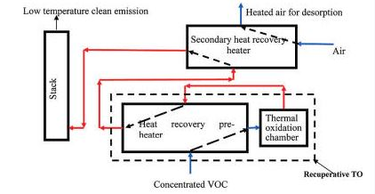
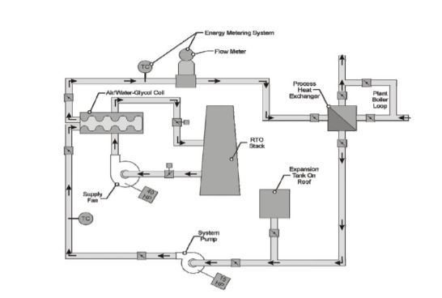

Working as a Design Engineer at Honda
Designed a new heat transfer system with SolidWorks and Autodesk to increase efficiency of the Regenerative Thermal Oxidizers by 5%.

Honda Manufacturing of Indiana (HMIN) is a plant in Greensburg, Indiana that produces Honda Civics, Insights, and CR-Vs. There is a significant amount of natural gas used at the HMIN. This natural gas is used for Volatile Organic Compounds (VOCs) abatement processes. VOC destruction is done using Regenerative Thermal Oxidizers (RTO). The process of pollutant destruction requires very high temperatures, therefore, requiring high amounts of natural gas. The paint department of the plant is looking for ways to implement heat recovery systems into the RTOs used by the plant. The goal of the Project is to do an efficiency analysis of the current systems by analyzing heat leakage charts and running heat transfer calculations to find solutions that will conserve energy lost in terms of heat loss. Currently, the recommendations are that the best way to conserve this energy would be to use the heat from the RTO to heat up something else in the factory. Areas where the heat can be used potentially include paint booth inlet air.
Working of an RTO
Detailed working of the RTO at Honda is shown in Figure. The Heat Exchange Media currently used at Honda is made of ceramic. Honda is currently using Catalytic Products Air Regenerative Thermal Oxidizer. This Oxidizer is 90% efficient because every 3 minutes the process of air flow reserves change directions allowing heat captured to be used for incoming air.
1. Process exhaust air (with VOCs) enters the regenerative thermal oxidizer and is directed into the ceramic heat exchange media where it is preheated.
2. Pre-heated air enters the combustion chamber where it is heated to the set-point temperature where oxidation of the VOCs are completed.
3. Hot treated clean air is cooled as it passes through the heat exchange media and is exhausted from the stack into the atmosphere.
4. Every three (3) minutes the process of air flow reverses direction as the poppet valves switch positions, allowing the heat captured in the ceramic media from the exiting clean air stream to heat the incoming process air. It is this regeneration of the ceramic heat exchanger media, with its high heat capacity, which enables a regenerative thermal oxidizer to deliver greater than 90% thermal efficiency.
Exploratory Concepts
RTO Preheat
For the RTO preheat idea, the goal is to utilize heat from the exhaust of the RTO and reuse it to preheat the gas coming into the RTO as shown in Figure, the heat coming out of the Thermal Oxidizing Chamber is used to preheat the concentrated VOC air coming into the thermal oxidizing chamber. When the concentrated VOC comes preheated, it will require less energy to heat to the temperature required in the thermal oxidation chamber.
Oven Preheat Improvement
The Honda Manufacturing of Indiana plant currently has a heat exchanger attached to an RTO exhaust used to preheat the ovens in the paint department. The current system is an air to air heat exchanger which is not efficient, and using a heat exchanger that uses a water-glycol mix would greatly improve the thermal efficiency. As seen in Figure, there is a schematic of this system. A heat exchanger is used to gain heat energy from the RTO exhaust, which is taken to the ovens where the heat is distributed to the system with a heat exchanger. This reduces the energy required to preheat the oven, saving electricity costs.
Boiler Preheat
For the boiler preheat idea, the goal is to utilize heat from the exhaust of the RTO and reuse it to preheat the water coming into the boilers. The heat leaving the Thermal Oxidizing Chamber is captured using a water glycol mix and sent to the boiler water inlet through a pipe and warms the water with a water to water heat exchanger entering so less fuel has to be used to heat the water. The process would be similar to Figure, except the mix would go to a boiler instead of an oven.